Siyuan Luo 1 , Borou Yu 2 , and Zeyu Wang 3,4
1 Xi'an Jiaotong University 2 MYStudio 3 The Hong Kong University of Science and Technology (Guangzhou) 4 The Hong Kong University of Science and Technology
Abstract
We propose DASKEL, a real-time interactive choreography system with bidirectional human skeleton-Labanotation conversion. DASKEL fuses dance notation (DA) with human skeleton data (SKEL). Our approach connects dance data represented in Labanotation with motion capture skeleton data in BVH format, facilitating seamless bidirectional conversion between the two formats. Moreover, DASKEL introduces a numerical representation for symbols used in Labanotation and supports their intuitive visualization which augments the practicality and applicability. Previous methods for the conversion between Labanotation and human skeleton only support the upper body, and our approach generalizes to the bidirectional conversion for the whole body. To generate more accurate and human-like dance postures, we integrate kinematic methods with physics-based simulation, resulting in more natural character animations generated from dance notations.
CCS Concepts
· Computing methodologies → Animation System;
1. Introduction
Like sheet music and musical scores, dance notation records dance movements and choreographic intentions effectively. Labanotation is one of the most widely used dance notation systems documenting dance movements with symbols, developed by the German modern dance pioneer and movement theorist, Rudolf von Laban, in 1928. Providing a system of abstract and symbolic language, Labanotation enables dancers and researchers to rediscover the elements of dance movements and provides the notation readers with a simultaneous and multidimensional understanding of the body movements from time to space.
Despite the merits of Labanotation, its steep learning curve makes it difficult for non-experts to understand and use due to its specificity and complexity. A computational tool that can effectively visualize Labanotation in the form of a human skeleton is currently lacking. We present DASKEL, an interactive and real-time system that can visualize and generate Labanotation through algorithmic support. By converting Labanotation symbols into corresponding dance movements, DASKEL generates animation keyframes in real time and synthesizes human character animations. Consequently, artists can efficiently browse and edit dance movements represented by corresponding Labanotation symbols. Furthermore, DASKEL supports reverse generation, in which a dance animation in skeleton data can be converted to its corresponding Labanotation.
This paper introduces our system design, the steps involved in creating corresponding skeletal animations from dance scores, the implementation methods for reverse generation, and the underlying logic of each component. Additionally, we provide test cases on basic two steps and cha-cha dances to showcase our preliminary findings and highlight the versatility of DASKEL.
Our work primarily provides a tool for choreographers to work with Labanotation symbols that can be readily integrated with character animation. Since Labanotation is a commonly used and professional dance language, an algorithm that converts Labanotation to animation will facilitate mutual understanding and collaboration between choreographers and computer graphics researchers. Overall, this paper makes the following contributions:
· A bidirectional conversion pipeline between Labanotation symbols and full-body skeletal animation. The complete system includes two parts: Laban2Skel and Skel2Laban.
· Keyframe generation integrating kinematic methods and physical-based simulation methods. We introduce a physicalbased constraint correction method based on Newton's descent on top of the FABRIK [AL11] solver to address IK failure and relative motion issues in Labanotation.
· Interactivity and editability. Artists can interact with the system and edit dance movements flexibly.
2. Related Work
Choreography. There has been a long history of the interaction of choreography and digital technologies. Since the 1960s, Merce Cunningham pioneered the use of computer software and motion capture technology to revolutionize the choreographic process [Cun68]. Similarly, Michael Noll's experimental work explored the generation of basic choreographic sequences through computational methods [Nol64]. Others approached choreography from a semiotic perspective, developing dance notations that preserve the authenticity of choreography, which can then be applied to dance education, practice, and research. Examples of such notations include Labanotation [LLR05], Benesh Notation [SBR83], and Eshkol-Wachman Notation [EW58]. Aristidou et al. provided a comprehensive overview of dance-related ontologies [ASC19], to which we refer readers for a basic understanding of the field.
Among these, Labanotation has become widely used by choreographers because of the connection between Laban movement analysis and character personality and psychological attributes in dance [DKD∗ 16, TBZ16]. A wide range of tools and applications have been proposed to organize Labanotation data [NH06, Hat06, ERKK∗ 18] and generate corresponding animations [SKB∗ 18, GLM19, Kum21]. A notable work is the Microsoft Labanotation Suite [IMY∗ 18], which facilitates translation between MoCap skeletons and Labanotation, enabling robots to learn dance movements through observation. Nonetheless, this approach is constrained by its limited capability to convert Labanotation from the upper body into keyframe data within motion capture. Furthermore, it does not offer a continuous and efficient interpolation method for transforming full-body dance movements, thus necessitating further exploration and refinement in this domain.
Human Skeleton Data. The study of human skeleton data has gained considerable importance in various fields, including biomechanics, computer animation, virtual reality, and ergonomics. A widely adopted format for representing human skeleton data is the Biovision Hierarchy (BVH) file format, which is known for its versatility, ease of use, and compatibility with numerous software applications [Men99]. This format facilitates the efficient storage and manipulation of complex human motion data, enabling the development of realistic animations and simulations.
In the realm of dance and performing arts, the BVH format has proven to be particularly valuable. It enables choreographers, dancers, and researchers to capture, analyze, and reproduce intricate dance movements with remarkable precision [WK08]. By utilizing human skeleton data in the form of BVH files, artists can develop and refine choreographic sequences, while researchers can study the biomechanics of dance to enhance performance and minimize the risk of injury. Furthermore, the application of BVH in dance opens up new avenues for collaboration between human performers and digital or robotic counterparts, fostering innovative, interdisciplinary artistic expressions [PP09].
Meanwhile, controlling the posture and joint twist angles of the human skeletal structure using kinematic methods is a common strategy in skeleton animation generation. Traditional methods such as FABRIK [AL11] and CCDIK [Pie69] are used for solving these problems. Deep learning-based approaches have also been employed to control character motion and generate character animations. For example, Starke et al. proposed deep learning methods to learn different types of motion phase manifolds and synthesize character animations from motion capture data [SZZK21,SMK22]. Earlier methods also used neural networks and deep reinforcement learning for more realistic and physics-based character control [HKS17, PALvdP18, ZSKS18]. Traditional IK (inverse kinematics) methods often require precise skeleton poses to be computed in advance, making them demanding for correct motion selection during keyframe generation. On the other hand, deep learning-based methods require extensive resources for training different actions. Our approach combines the traditional IK method with physics-based posture correction strategies, enabling the generation of animation sequences that closely approximate the target pose with fewer resource requirements and faster processing.
Dance-Skeleton Interaction. Recent advances in algorithms have also enabled dance synthesis from human skeleton data. For instance, by extracting acoustic and kinematic features, researchers can utilize the key information within these characteristics for choreography purposes, such as employing a long shortterm memory (LSTM) autoencoder model to generate or analyze dance movements [TJM18]. Other methods can generate Labanotation from motion capture data using motion analysis, body posture quantization, and rhythm-aware sequence-to-sequence learning [CNH15, LMZ∗ 22]. The keyframes represented in Labanotation can also be interpolated using robust motion inbetweening methods [HYNP20], resulting in a full character animation.
Meanwhile, researchers have introduced a system called DAMUS [ZYMW22], concerning the interaction between dance and music, which incorporates the representation and conversion of motion capture data as well. This system significantly enhances the efficiency of the creative process, fostering innovation in the development of artistic performances. Most of the existing dance-skeleton interaction systems are offline or lack validation from artists regarding dance postures and movements. Our method, based on Labanotation symbols, is a commonly used approach in choreography for memorization and learning. Furthermore, it supports interactivity and editing, allowing artists to have greater control and involvement in the process.
3. System Design
DASKEL establishes a correspondence between dance and human skeletal data, which involves time series and keyframe timing, body parts and skeletal nodes, relative movements and joint rotation offsets, as well as pose generation and intermediate frame interpolation. Figure 1 shows the corresponding elements in Labanotation and the human skeleton. Figure 2 shows our complete system design, which comprises two primary components: Laban2Skel and Skel2Laban.
Laban2Skel takes as input a Labanotation sheet including various symbols. This sheet encompasses the position and motion information for various body parts within a temporal sequence. Using the provided human skeleton structure information, DASKEL transforms the Labanotation symbols into human skeletal animation data, converting each beat into a keyframe for skeletal animation. Subsequently, a complete animation is generated through intermediate frame generation techniques (Figure 3).

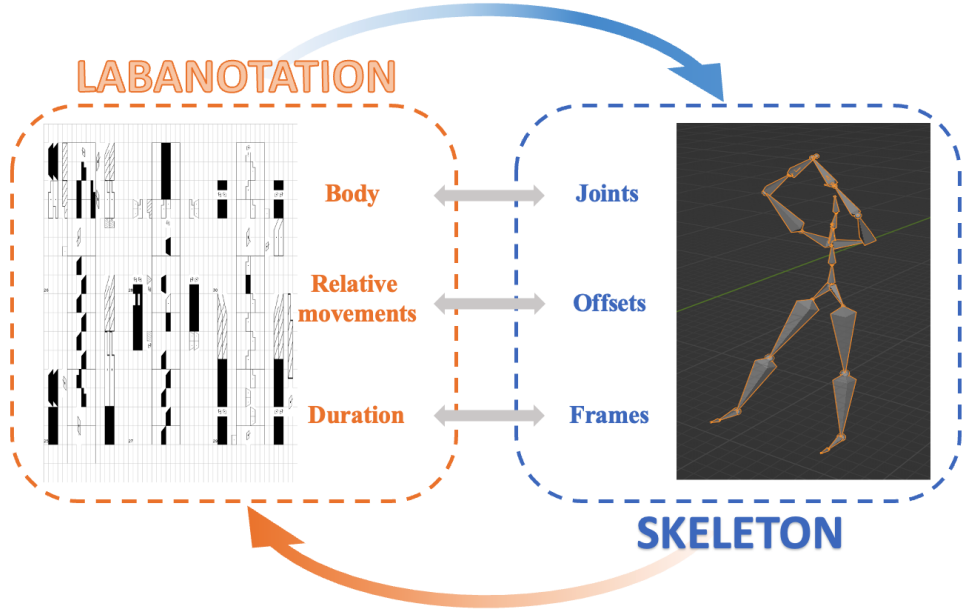

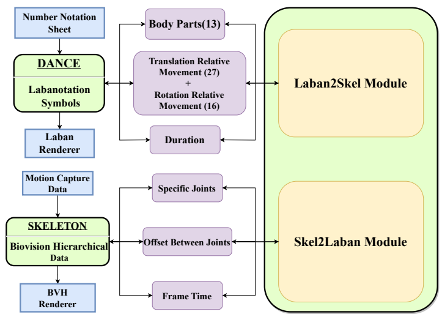
Skel2Laban processes motion capture data for individual frames over a specified duration. By devising an energy function, prior knowledge in Labanotation symbols and energy peaks are identified as dance beats and converted into keyframes. The corresponding Labanotation symbols are determined according to the skeletal posture during each beat, resulting in a comprehensive dance note. The final result is a visualized Labanotation for the entire dance (Figure 4).
4. Methodology
To achieve a complete bidirectional conversion between Labanotation symbols and human body animation, our method addresses four core issues: 1) represent dance with Labanotation symbols; 2) select specific human skeletal structure and initial poses, and establish the mapping between human skeletal joints and Labanotation symbols; 3) convert discretized Labanotation symbols into corresponding refined keyframes of human body animation and efficiently synthesize intermediate frames; and 4) discretize The continuous human body animation along the time sequence and extract the corresponding Labanotation symbols.

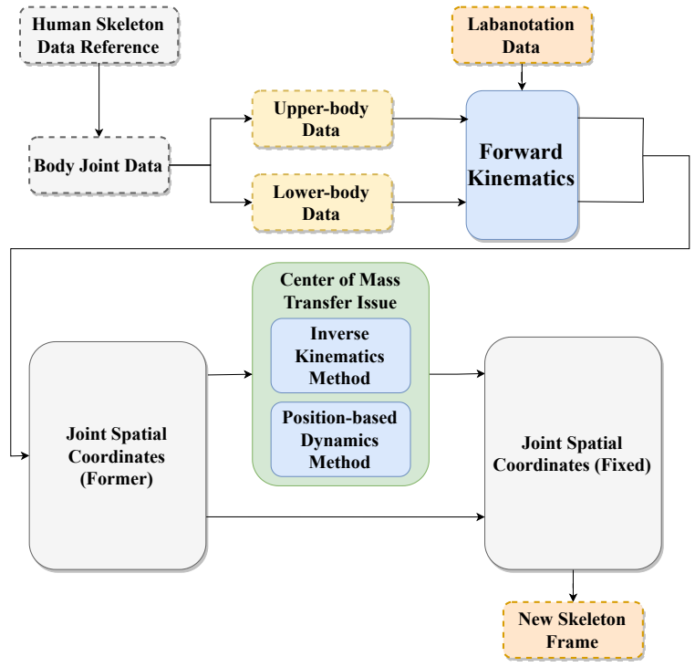

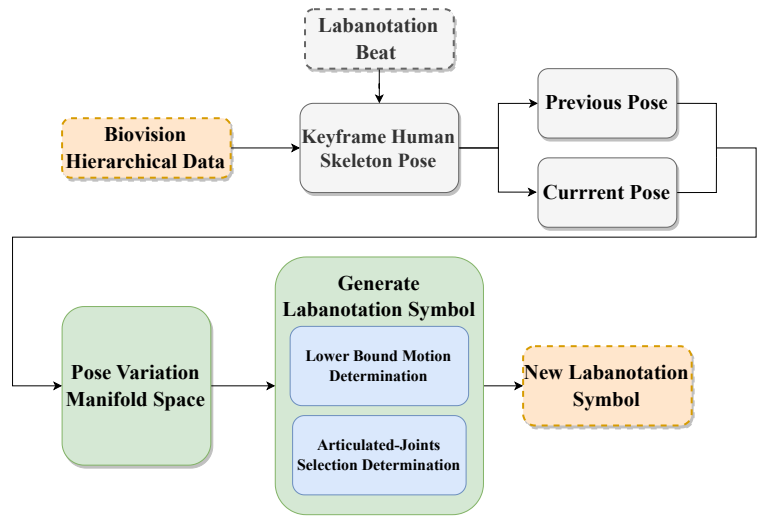
4.1. Dance Module
We introduce the dance module, which provides an overview of the complete process from inputting dance sheets to interpreting them as spatial relative motion poses in two aspects: the spatial relative positions corresponding to Labanotation symbols and the body parts corresponding to Labanotation symbols.
Spatial relative positions for Labanotation. First and foremost, we introduce the fundamental symbols of Labanotation, a structured system designed for the analysis and documentation of movement through symbolic representation. This system is predominantly employed in the realm of choreography, analogous to the use of sheet music in musical composition. Each symbol in Relative Rotations

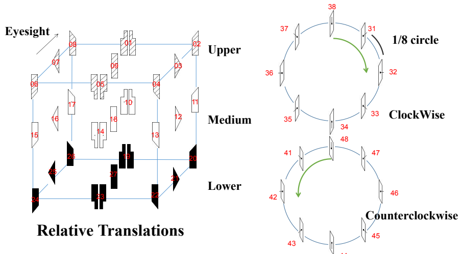

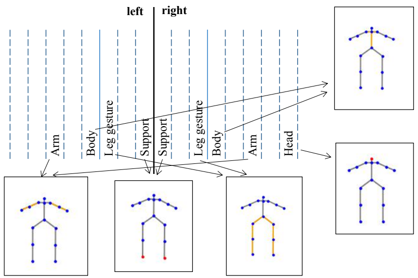
Labanotation conveys spatial position information, with movement space uniformly divided into a 3×3×3 grid, resulting in a total of 27 symbols. These symbols serve to define the states of various body parts, thereby determining the overall body posture in dance. In addition to the 27 position symbols, there are 16 rotation symbols, comprising 8 clockwise and 8 counterclockwise, which are utilized to establish orientation.
The comprehensive body posture in dance can be determined by employing these 43 symbols. We assign numbers between 1 and 27 to symbols representing relative translations. 31-38 encodes clockwise relative rotations, and 41-48 encodes counterclockwise relative rotations. The details are illustrated in Figure 5.
Body Parts for Labanotation. In Labanotation, we associate basic symbols representing spatial positions with specific body parts, subsequently connecting each movement in a coherent sequence on the timeline according to the dance's rhythm. This process results in the formation of a comprehensive Labanotation score. We identified 13 crucial body parts as the primary components in Labanotation, comprising seven upper limb parts and six lower limb parts (Figure 6). The movement of each body part is represented by a Labanotation symbol in a particular time interval. Finally, we organize the numbers in a tabular format as a frame sequence, which constructs the whole Labanotation parser.
In addition, we provide a visualization tool for Labanotation symbols called "Laban Renderer," which converts a numeric-based notation sheet into Labanotation symbols.
4.2. Human Skeleton Animation Module
Basic Skeleton Data. To encompass a broader spectrum of human movements and postures, we constructed a model consisting of a greater number of skeletal joints than the body parts defined in Labanotation. Consequently, we opted for a human body skeleton data comprising 31 skeletal joints, which encompasses upper limbs, lower limbs, and body joints. We utilized the BVH format to construct the human body data, as it is a prevalent format for motion capture skeletal structure data that is easily modifiable and visually interpretable.
There are two common initial dance postures: A pose and T pose. However, to better align with natural movement states, we combined the T pose for the upper body and the A pose for the lower body as the initial human body posture. This approach facilitated the construction of human skeletal data more effectively.
Frame construction. Subsequently, we facilitate the generation of human skeletal animation by manipulating the torsion angles of 31 joints and the foundational coordinates of the torso. Since our animation is driven by each Laban symbol, we need to first generate keyframes and then interpolate between them to generate the entire animation sequence. The generation of keyframes depends on the correspondence with Laban symbols, whereas the intermediate frames are determined by frame interpolation methods. The implementation details are presented in Section 4.3.
4.3. Laban2Skel
As shown in Figure 3, the Laban2Skel process is decomposed into three stages:1) parsing Labanotation symbols; 2) pose correction combining inverse kinematics and physics-based position-based dynamics methods; and 3) generating natural intermediate frames based on quaternion interpolation.
Labanotation Parser. We examine a dance score created using Labanotation and proceed to interpret the symbols based on the Number Notation Sheet representation. This constitutes the most critical aspect of the Laban parser. Each movement within the Labanotation dance score is deconstructed into three distinct elements: the body joint actuated by the movement, the target position to be attained by the movement, and the duration of the movement. This approach allows for the precise definition and classification of each movement.
Typically, there are two interpretations of movement duration:
sustaining time and performing time. Sustaining time refers to the period required for a limb to reach and maintain a specified position within a beat. Differently, performing time denotes the duration in which a limb moves fluidly to ultimately reach the designated position. Our Laban parser opts for the latter, i.e., performing time, as this representation aligns more closely with the kinematic properties of human motion and the organization of dance choreography.
Keyframe Generation. We create keyframes based on the Labanotation beat. The Labanotation beat provides a fuzzy motion state based on relative positions, and the actual motion poses associated with these relative motion states are closely related to the body's center of mass. Consequently, the same Labanotation symbol can represent slightly different actual motion trajectories depending on the body's center of mass in different poses. To address this issue, we first decompose the Labanotation symbol for the human body into upper body and lower body components, which correspond to the skeletal joints of the upper and lower body. The upper and lower body components are connected through the base joint, which is located at the torso.
Due to the balance of the dancer's posture and the design of Labanotation, the center of mass of the upper body is generally considered to remain relatively stable. However, the challenge lies in addressing the changes in the center of mass that occur with the movements of the lower body. We propose a posture correction method based on inverse kinematics and physics-based positionbased dynamics. Firstly, we use forward kinematics to determine the position of each joint of the human body at the current moment, ensuring that the current situation is both accurate and physically plausible. Subsequently, we determine the current human body center of gravity based on the lower body joints affected by the Labanotation from the previous moment. By combining this with the spatial relationships described by Labanotation, we force the corresponding joints to move to their respective positions.
Following this, we employ an inverse kinematics solver to evaluate whether the target position of the current joint is reachable. If it is reachable and the joint's rotation angle does not violate physical limits, we can use the results from inverse kinematics (IK) to recursively generate the target position for each joint. If IK indicates that the position is unreachable or there are multiple solutions, we resort to the position-based dynamics (PBD) method for posture correction.
We establish two types of constraints to rectify human posture: distance constraints and angle constraints. We construct two energy functions and optimize them during each Labanotation movement, utilizing Newton's iterative method to ensure that the human posture always upholds the corresponding relational conditions. Distance constraints are formulated considering the distances between interconnected joints in the human body, adhering to the inviolable physical law that the human skeletal structure cannot deform. Conversely, angle constraints are applied to the angles between joints, effectively preventing rotation angles that would otherwise contravene human anatomical principles.
We calculate the spatial coordinates of each joint and denote them as Xi, i = 0,1,2...,12. Next, we define an energy function based on distance and bending constraints as Equations 1 and 2.
We utilize Newton iteration to compute gradients for energy functions, ensuring that the corrected joint positions always satisfy the energy constraints. For the whole posture correction solver algorithm, please refer to Algorithm 1. In addressing issues related to relative motion and center of gravity transfer, our method has also proven to be somewhat effective. We have demonstrated a short sequence of full-body Labanotation symbols, illustrating the generation of keyframes for human skeletal animation during the process of left and right foot movements and the transfer of the body's center of gravity (Figure 7).

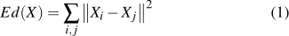

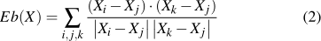
Algorithm 1: Posture Correction Solver

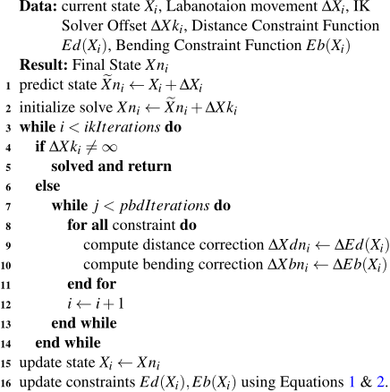
Intermediate Frame Generation. Common keyframe interpolation methods include smooth interpolation and quaternion interpolation. To more naturally represent character dynamics and the connection relationships of the skeleton, we use quaternion interpolation to generate intermediate frames in this study. We compared the results of quaternion interpolation and smooth interpolation, and it is evident that our approach yields more natural and adherent results to human motion patterns.
4.4. Skel2Laban

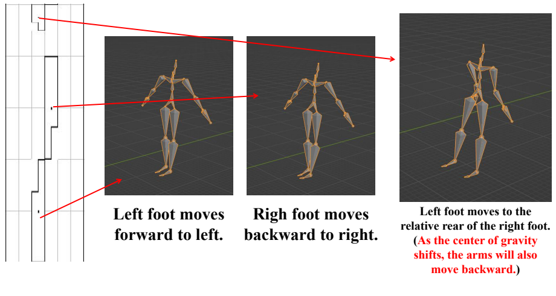
Pose Manifold Space. We extracted corresponding keyframes from the input motion capture data based on the prior Labanotation beats. Following this, we need to extract Labanotation information from these keyframes. We adopted a strategy of constructing a Euclidean manifold space between keyframes, and utilized this space for the analysis and extraction of Labanotation symbols. We selected the corresponding motion joints through a method of lower bound determination. Given that the prior joints in dance Labanotation are the ones exerting force, we choose the joints with the greatest range of motion as the active body parts in Labanotation (Figure 8).
Articulated Joints Selection. Due to the diversity of Labanotation and the non-uniqueness of converting motion capture data into Labanotation symbols, the selection of primary motion joints often relates to interconnected joints in the human skeleton. For instance, the first half of a dancer's action of extending an arm horizontally is virtually identical to the skeletal animation generated by moving the hand to the chest. However, the main joints corresponding to their Labanotation are different. Therefore, we designed a strategy in the manifold space that includes joint movements, providing a feasible Labanotation symbol that simultaneously does not violate the natural kinematic rules of human movement.
We assigned priorities to articulated joints and determined the primary joints based on the angles between different joint motion vectors across two keyframes. Joints further from the body are given higher priority than those closer to the body. We found that when joints distant from the body, such as wrists and feet, serve as the primary joints in motion, the angle in the manifold space between them and joints closer to the body, like the elbows and knees, is often less than 45 degrees. Conversely, when joints with lower priority serve as the primary joints in motion, their angle is often greater than 45 degrees.
Therefore, we employed a clustering method to classify the manifold spaces of joints' movements between two keyframes, distinguishing those that are farther from the body and those that are closer. This method assists us in determining the primary joints among the articulated ones.
To summarize our conversion pipeline, we first employed the FABRIK method to calculate the relative positions of joints. The conversion from the BVH file to joint coordinates in spatial coordinates during forward kinematics was manually computed through rotation matrices in our code. However, when resetting joint positions based on Labanotation, there could be multiple solutions or unreachable positions. To tackle this, we integrated the Positionbased Dynamics method. By establishing distance and bending constraints between joints and iteratively applying the NewtonRaphson method, we set a maximum iteration step of 1000 and initialized constraints based on the skeleton length in the initial state of the human body. With this setup, keyframe generation in the experiments was always performed in real time. However, for the generation of intermediate frames, we only used traditional position interpolation and quaternion interpolation, and we will explore learning-based methods in the future for better results.

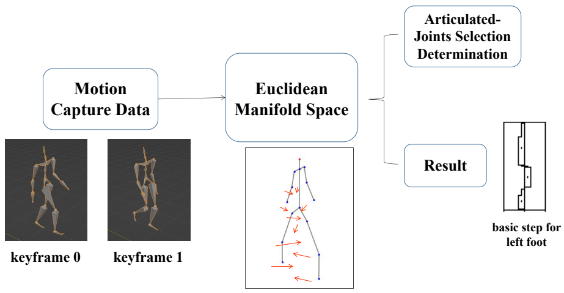
5. Applications
We conducted two sets of experiments to validate our system. The first set is unit cases, where we generate corresponding animation keyframes for human actions corresponding to the 43 given Labanotation symbols. This verifies the stability of our Laban2Skel component. We then reverse the process, taking the human skeletal animations generated from the 43 Labanotation symbols as inputs to our Skel2Laban component, to evaluate the quality of the output Labanotation. The second set of experiments generates Labanotation symbols from the basic two steps and cha-cha dances, testing the feasibility of our system in more complex scenarios.
5.1. Unit Cases for Laban2Skel and Skel2Laban Pipeline
For the Laban2Skel module, we chose two different body parts representing the upper and lower limbs, including those distant from and close to the trunk, and selected three directional symbols from 27 translation Labanotation symbols and one from 16 rotation Labanotation symbols. In total, we demonstrated the results of human animation keyframe output under 12 different Labanotation symbols. For the unit test module of Skel2Laban, we input the generated skeleton in reverse to verify the accuracy of the generated Labanotation symbols. Meanwhile, we introduced a slight noise in the human animation generated by Laban2Skel to create minor perturbations in the joints. While ensuring that the overall posture of the human skeleton is not altered, we validated the robustness of the Skel2Laban system. We compared our experimental results with the upper-body Laban2Skel component of Microsoft's LabanSuite tool [IMY∗ 18]. Our upper-body results closely aligned with those of LabanSuite. However, LabanSuite cannot handle actions that involve lower-body Laban symbols (Figure 9).

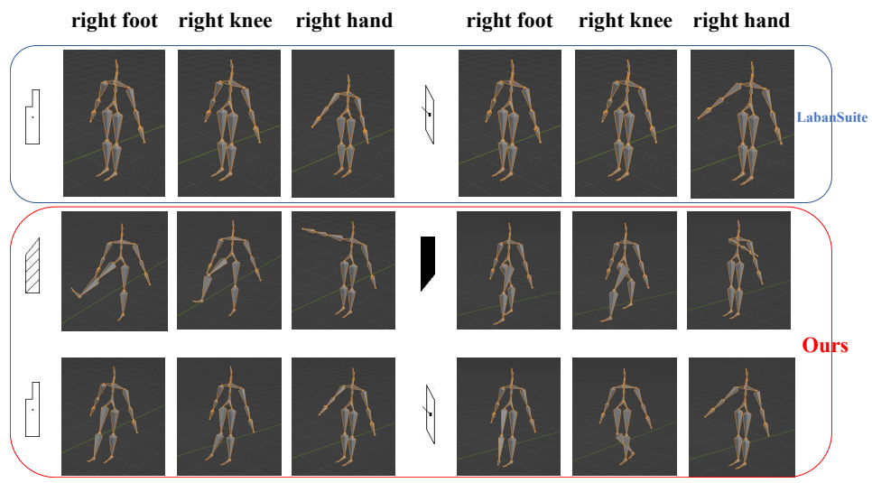
5.2. More Complex Dance and Motion
We also demonstrated that DASKEL can still generate accurate human postures in longer and more complex actions. As the part of the Labanotation that generates human skeletal animations from lower limb movements is particularly complex and challenging, our focus is on the movements of the lower limbs. Therefore, we presented a sequence of Labanotation symbols from regular walking and a piece of cha-cha dance, generating natural human animations through our system (Figure 10).

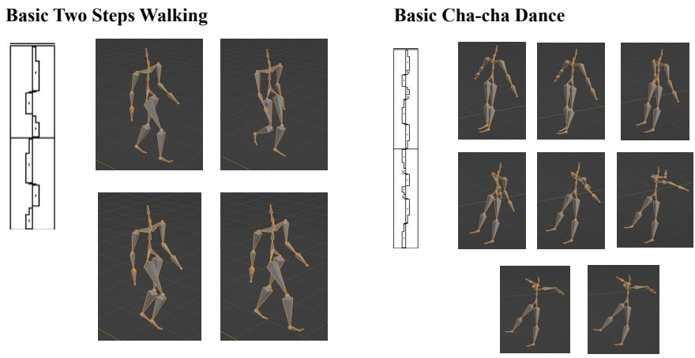
6. Conclusions and Future Work
Building on the foundation of dance and human skeletal animation research, we developed the DASKEL system. We extended the Labanotation symbols of the upper body to the whole body. In the process of converting Labanotation symbols to skeleton animation, we preliminarily addressed the issues of relative motion and center of gravity. In the conversion of the human skeleton to Labanotation symbols, we constructed a Euclidean manifold space, extracting the main moving human joints and the associated moving human joints from the keyframes. The bidirectional conversion between Labanotation dance movements and human skeletal animations facilitates the collaboration between professional choreographers and computer graphics researchers.
Our work has a few limitations. In terms of Labanotation symbols, we have only used 13 body parts and 43 basic Labanotation symbols to represent displacement and rotation. The full set of Labanotation symbols includes more body parts and more complex motion postures, such as the associated movements of multiple body parts.
In terms of generating a skeleton from Labanotation, the connection and associated relationship between the upper and lower body require more complex physics-based constraints for control and correction. For instance, biomimicry and muscle simulation could be used to control the interaction between different joints. Meanwhile, when generating intermediate transition animations through keyframes, both smooth interpolation and quaternion interpolation methods still cannot naturally represent human movements. In the future, training a neural network to simulate the generation of intermediate frames could be a viable approach.
In the pipeline of generating Labanotation symbols from human animations, there are also some limitations in extracting keyframes and selecting the main moving body parts and motion states. Our method is based on the input of Labanotation rhythm as prior information to extract corresponding keyframes. Alternatively, it is also a viable method to construct an energy function to automatically select keyframes. Meanwhile, by constructing the manifold space between keyframes, training a neural network based on motion postures to select corresponding main moving postures as Labanotation body parts might perform better.
Finally, dancers may practice with various dancing skills and styles, and the same piece performed by different people may vary. In maintaining the choreographers' accurate intentions, Labanotation or other dance notations could be employed through the process from recording to learning, rehearsing, and performing, so that the reconstruction and of the performance would stay accurate. There are also some challenges in the Skel2Laban process, as it can result in several reasonable versions of Labanotation writings due to the subtle variation of the gestural figures, the difference of working body parts, and the deviation in motion capture data. We plan to address these issues by collaborating more closely with dance researchers and developing more robust systems.
Acknowledgments
This work was partially supported by Guangzhou-HKUST(GZ) Joint Funding #2023A03J0670. We thank Zhe Yan and the reviewers for their helpful suggestions.
References
[AL11] ARISTIDOU A., LASENBY J.: FABRIK: A Fast, Iterative Solver for the Inverse Kinematics Problem. Graph. Models 73, 5 (sep 2011), 243-260. doi:10.1016/j.gmod.2011.05.003. 1, 2
[ASC19] ARISTIDOU A., SHAMIR A., CHRYSANTHOU Y.: Digital Dance Ethnography: Organizing Large Dance Collections. J. Comput. Cult. Herit. 12, 4 (nov 2019). doi:10.1145/3344383. 2
[CNH15] CHOENSAWAT W., NAKAMURA M., HACHIMURA K.: GenLaban: A tool for Generating Labanotation from Motion Capture Data. Multimedia Tools and Applications 74 (2015), 10823-10846. 2
[Cun68] CUNNINGHAM M.: Changes: Notes on Choreography. Something Else Press, 1968. 2
[DKD∗ 16] DURUPINAR F., KAPADIA M., DEUTSCH S., NEFF M., BADLER N. I.: PERFORM: Perceptual Approach for Adding OCEAN Personality to Human Motion Using Laban Movement Analysis. ACM Trans. Graph. 36, 1 (Oct 2016). doi:10.1145/2983620. 2
[ERKK∗ 18] EL RAHEB K., KASOMOULIS A., KATIFORI A., REZKALLA M., IOANNIDIS Y.: A Web-Based System for Annotation of Dance Multimodal Recordings by Dance Practitioners and Experts. In Proceedings of the 5th International Conference on Movement and Computing (2018), pp. 1-8. 2
[EW58] ESHKOL N., WACHMAN A.: Movement Notation. Weidenfeld &Nicolson, London, UK, 1958. 2
[GLM19] GUJRANIA S., LONG D., MAGERKO B.: Moving in Virtual Space: A Laban-Inspired Framework for Procedural Animation. In Proceedings of the Experimental AI in Games Workshop (EXAG) at the 15th AAAI Conference on Artificial Intelligence and Interactive Digital Entertainment (AIIDE'19) (2019). 2
[Hat06] HATOL J.: MOVEMENTXML: A Representation of Semantics of Human Movement Based on Labanotation. Master's thesis, Simon Fraser University, 2006. 2
[HKS17] HOLDEN D., KOMURA T., SAITO J.: Phase-FunctionedNeural Networks for Character Control. ACM Trans. Graph. 36, 4 (Jul 2017). doi:10.1145/3072959.3073663. 2
[HYNP20] HARVEY F. G., YURICK M., NOWROUZEZAHRAI D., PAL C.: Robust Motion In-Betweening. ACM Trans. Graph. 39, 4 (Aug 2020). doi:10.1145/3386569.3392480. 2
[IMY∗ 18] IKEUCHI K., MA Z., YAN Z., KUDOH S., NAKAMURA M.: Describing Upper-body Motions Based on Labanotation for Learningfrom-observation Robots. International Journal of Computer Vision 126 (2018), 1415-1429. 2, 7
[Kum21] KUMAR R.: ALabanMovement Approach to Creating Expressive Motion in Animated Soft-Body Agents. In MIG'21: Motion, Interaction and Games (Lausanne, Switzerland, November 10-12 2021). Poster. 2
[LLR05] LOKE L., LARSSEN A. T., ROBERTSON T.: Labanotation for Design of Movement-based Interaction. 2
[LMZ∗ 22] LI M., MIAO Z., ZHANG X.-P., XU W., MA C., XIE N.: Rhythm-aware sequence-to-sequence learning for labanotation generation with gesture-sensitive graph convolutional encoding. IEEE Transactions on Multimedia 24 (2022), 1488-1502. doi:10.1109/TMM. 2021.3066115. 2
[Men99] MENACHE A.: Understanding Motion Capture for Computer Animation and Video Games, 1st ed. Morgan Kaufmann Publishers Inc., San Francisco, CA, USA, 1999. 2
[NH06] NAKAMURA M., HACHIMURA K.: An XML Representation of Labanotation, LabanXML, and Its Implementation on the Notation Editor LabanEditor2. Review of the National Center for Digitization 9 (2006), 47-51. 2
[Nol64] NOLL A. M.: A Computer Generated Ballet. https: //digitalartarchive.siggraph.org/artwork/ a-michael-noll-a-computer-generated-ballet/, 1964. 2
[PALvdP18] PENG X. B., ABBEEL P., LEVINE S., VAN DE PANNE M.: DeepMimic: Example-Guided Deep Reinforcement Learning of Physics-Based Character Skills. ACM Trans. Graph. 37, 4 (Jul 2018). doi:10.1145/3197517.3201311. 2
[Pie69] PIEPER D. L.: The Kinematics of Manipulators under Computer Control. Stanford University, 1969. 2
[PP09] POPAT S., PALMER S.: Dancing with Sprites and Robots: New Approaches to Collaboration between Dance and Digital Technologies. 05 2009. 2
[SBR83] SINGH B., BEATTY J. C., RYMAN R.: A Graphics Editor for Benesh Movement Notation. SIGGRAPH Comput. Graph. 17, 3 (jul 1983), 51-62. doi:10.1145/964967.801132. 2
[SKB∗ 18] SANKHLA A., KALANGUTKAR V., BHUYAN H. B., MALLICK T., NAUTIYAL V., DAS P. P., MAJUMDAR A. K.: Automated Translation of Human Postures from Kinect Data to Labanotation. In Computer Vision, Pattern Recognition, Image Processing, and Graphics: 6th National Conference, NCVPRIPG 2017, Mandi, India, December 16-19, 2017, Revised Selected Papers 6 (2018), Springer, pp. 494505. 2
[SMK22] STARKE S., MASON I., KOMURA T.: DeepPhase: Periodic Autoencoders for Learning Motion Phase Manifolds. ACM Trans. Graph. 41, 4 (Jul 2022). doi:10.1145/3528223.3530178. 2
[SZZK21] STARKE S., ZHAO Y., ZINNO F., KOMURA T.: Neural Animation Layering for Synthesizing Martial Arts Movements. ACM Trans. Graph. 40, 4 (Jul 2021). doi:10.1145/3450626.3459881. 2
[TBZ16] TRUONG A., BOUJUT H., ZAHARIA T.: Laban Descriptors for Gesture Recognition and Emotional Analysis. The Visual Computer 32 (2016), 83-98. 2
[TJM18] TANG T., JIA J., MAO H.: Dance with Melody: An LSTMAutoencoder Approach to Music-Oriented Dance Synthesis. In Proceedings of the 26th ACM International Conference on Multimedia (New York, NY, USA, 2018), MM '18, Association for Computing Machinery, p. 1598-1606. doi:10.1145/3240508.3240526. 2
[WK08] WILSON M., KWON Y.-H.: The role of biomechanics in understanding dance movement. Journal of Dance Medicine & Science 12, 3 (2008). 2
[ZSKS18] ZHANG H., STARKE S., KOMURA T., SAITO J.: ModeAdaptive Neural Networks for Quadruped Motion Control. ACM Trans. Graph. 37, 4 (Jul 2018). doi:10.1145/3197517.3201366. 2
[ZYMW22] ZHOU T., YU B., MIN J., WANG Z.: DAMUS: A Collaborative System for Choreography and Music Composition. In IEEE International Conference on Multimedia and Expo Workshops (ICMEW) (2022), pp. 1-6. doi:10.1109/ICMEW56448.2022.9859441. 2